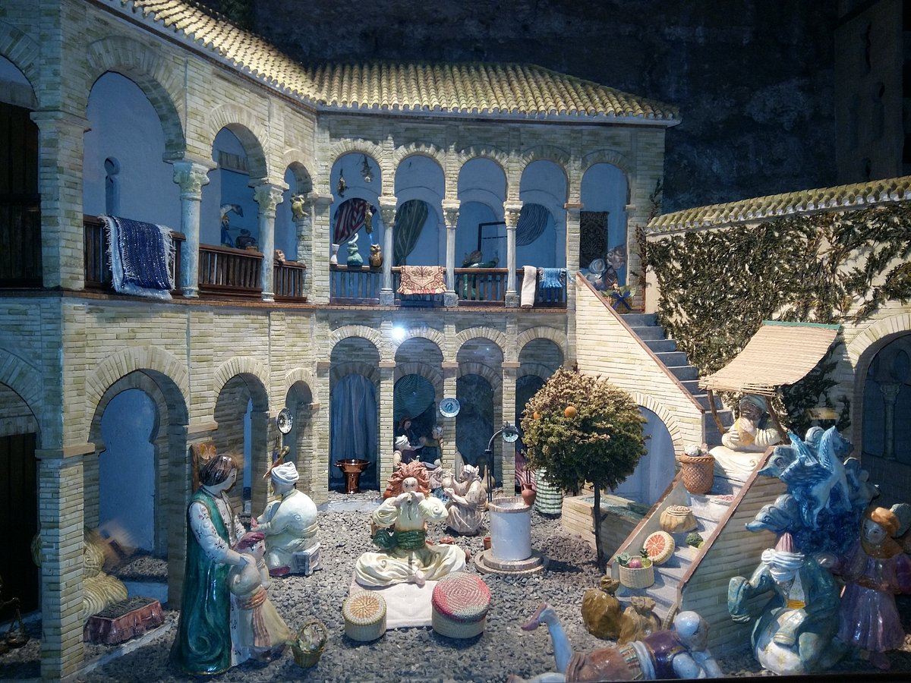
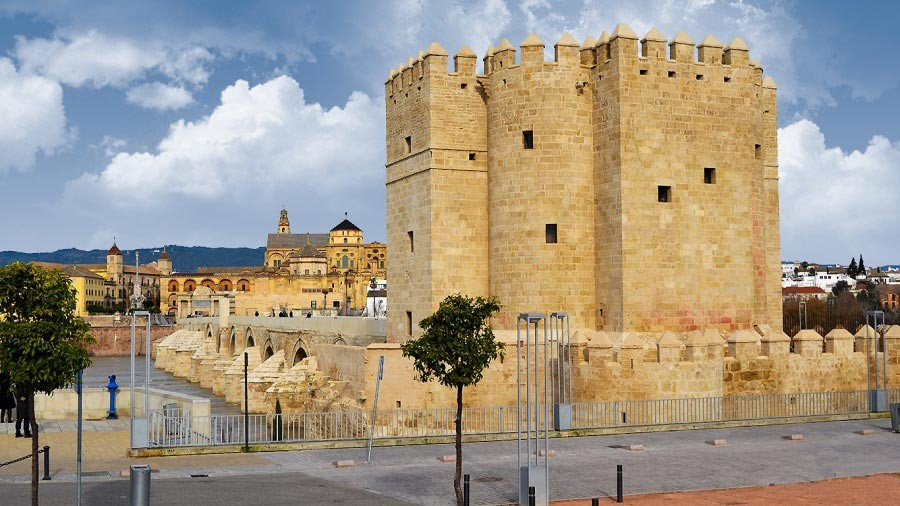
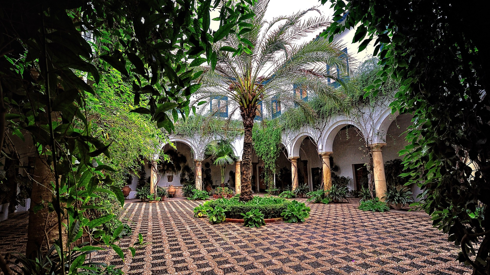

متحف فيفو دي الأندلس
يقع متحف فيفو دي الأندلس في قلب مدينة قرطبة التاريخية، وهو معلم بارز يروي قصة الحضارة الإسلامية في شبه
الجزيرة الإيبيرية. هذا المتحف الفريد من نوعه يستكشف بتفصيل ودقة تاريخ وثقافة الأندلس، والذي يمتد على مدى
ثمانية قرون من العظمة والإبداع.
قصة الأندلس في متحف فيفو:
يبدأ الزائر جولته في المتحف بالتعرف على نشأة الحضارة الإسلامية في شبه الجزيرة الإيبيرية في القرن
الثامن الميلادي. يُقدم المتحف مجموعة من القطع الأثرية والتحف الفنية التي ترصد تطور الأندلس عبر
العصور، من العمارة الزخرفية إلى الفنون التطبيقية والعلوم.
أحد أبرز معروضات المتحف هي نماذج معمارية مفصلة لأبرز المباني الأندلسية، كقصر الحمراء في غرناطة ومسجد
قرطبة الكبير. كما يُعرض مجموعة من المخطوطات والكتب النادرة التي تُسلط الضوء على الإنجازات الأدبية
والعلمية للمسلمين في الأندلس.
العلوم والفنون الأندلسية:
يُولي المتحف اهتماماً خاصاً بالإسهامات الأندلسية في مختلف المجالات العلمية والفنية. تُعرض في قاعات
المتحف نماذج من الأدوات الفلكية والرياضية المتطورة التي استُخدمت في الأندلس، إلى جانب مجموعات من
الخزف والنحت والفخار التي تجسد الإبداع الفني للحضارة الأندلسية.
وللتعريف بالإرث الموسيقي والأدبي للأندلس، ينظم المتحف باستمرار ورش عمل وعروض حية للموسيقى والشعر
التقليدي. كما يُقام فعاليات ثقافية متنوعة تستكشف جوانب أخرى من الحياة اليومية في الأندلس.
تجربة زيارة فريدة:
يُعد متحف فيفو دي الأندلس تجربة لا تُنسى لكل من يزوره. من خلال استخدام التقنيات التكنولوجية الحديثة
في العروض، يُغمر المتحف الزوار في أجواء الحضارة الأندلسية الزاهرة. كما يُوفر المتحف خدمات إرشادية
متميزة تساعد الزوار على استكشاف هذا الإرث الحضاري الفريد بشكل معمق وممتع.

لا شك أن زيارة متحف فيفو دي الأندلس ستكون تجربة مثرية وذات مغزى لكل من يهتم بتاريخ وثقافة الأندلس. هذا
المتحف الفريد يُقدم للزوار لمحة شاملة عن عظمة الحضارة الأندلسية التي تركت بصماتها الراسخة على الثقافة
الإسبانية حتى يومنا هذا.

قصر فيانا
قصر فيانا هو من أهم المعالم التاريخية والمعمارية في مدينة قرطبة الأندلسية. يقع هذا القصر في قلب المدينة
القديمة، على بُعد خطوات من مسجد قرطبة الكبير.
يقع قصر فيانا في الجزء القديم من مدينة قرطبة، على بُعد خطوات قليلة من مسجد قرطبة الكبير وساحة بلاثا
دي لا كورديلا. يطل القصر على شوارع ضيقة وحارات أندلسية مميزة في هذه المنطقة التاريخية من المدينة.
مراحل البناء والتطوير:
تم بناء القصر في القرن السادس عشر على أساسات بناء أقدم تعود إلى العصر الأموي. في القرن الثامن عشر،
تم تجديد وتوسيع القصر من قبل عائلة نبيلة من قرطبة تسمى عائلة فيانا. وشهد القصر بعد ذلك ترميمات
وإعادة تأهيل في القرن العشرين لتحويله إلى متحف.
التخطيط المعماري:
يتميز القصر بتخطيطه المعماري الأندلسي التقليدي، مع فناء مركزي يحيط به الأروقة والقاعات المختلفة. كما
يحتوي على حدائق داخلية جميلة وبرك للمياه. زخرفت الجدران بالرخام والفسيفساء والنقوش الخشبية، إضافة
إلى السلالم والقباب الرائعة.
المعروضات المتحفية:
يضم قصر فيانا اليوم مجموعة متنوعة من المعروضات التي تعكس مختلف جوانب الحضارة الأندلسية. تشمل هذه
المجموعات لوحات زيتية، وخزفيات، وأثاث قديم، وأدوات منزلية، وقطع أثرية أخرى. كما يضم القصر مكتبة غنية
بالمخطوطات والكتب النادرة.
تم بناء قصر فيانا في القرن القرن السادس عشر الميلادي، على أنقاض دار سابقة تعود إلى العصر الأموي. كان
القصر مقراً لعائلة نبيلة من عائلات قرطبة، وهو اليوم أحد أبرز المتاحف في المدينة.
المعمار والتصميم:
يتميز قصر فيانا بطابعه المعماري الأندلسي الفريد. تتمثل سماته الرئيسية في حدائقه الداخلية الخلابة،
وأروقته المطلة على فناء مركزي، وزخارفه الجدارية الرائعة. كما يضم القصر العديد من القاعات والغرف
المزخرفة بأساليب فنية متنوعة.

يعتبر قصر فيانا واحداً من أهم المعالم السياحية والثقافية في مدينة قرطبة، ويجذب الزوار من جميع أنحاء
العالم للتعرف على الإرث الأندلسي الفريد.